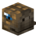

RELEASE 0.3.9 · MINECRAFT 26.1.2 / 26.2
SkyBlock,
clearly.
Maps that stay aligned. HUDs that show only what matters. Hunting, foraging and 320 Attribute Shards—organized into one calm client-side experience.
Chameleon
Gemzie
Thyst

Legendary
TORRHUS CANYON
Forest Whispers
28,820
PET
[Lvl 200] Jade Dragon
68.6% XP
01 / 06
A focused SkyBlock companion
Less noise. More signal.
QCloudy_Addition turns scattered client-visible information into readable decisions—without automating play, sending background commands or requiring another SkyBlock mod to start.
02 / 06
Built around the way you play
One mod. A quieter screen.
01
UNIFIED CONTROL
Settings organized by function—not by mod.
QCA can safely surface recognized settings and HUD positions from installed SkyHanni, Skyblocker, Firmament, BabyZombieAddons and Feesh builds. Settings and HUD scans are separate, opt-in and double-confirmed.
- Unavailable categories stay hidden
- Unknown provider branches fail closed
- External values save through the provider's own path
Concept test — use cautiously. Unified Settings and Unified HUD Editing are experimental, default-off features.
02
SMART HUDS
Content first. Empty panels never linger.
Mining tasks, powders, pets, Torrhus resources, Safari progress and Crimson Isle quests appear only when there is something useful to show.
MINING TASKSGoblin Slayer
82.0%
03
TIMELY CUES
Warnings at the moment they matter.
Fishing bites, Power Orb and SOS despawns, Century Cake expiry, Lasso REEL, Warden readiness and rare personal Tree Gifts use bounded signals, center text and feature-owned audio controls.
PLASMAFLUX POWER ORBDESPAWNED!Sound · 64%
04 / 06
Maps that respect the world
Know roughly where you are—without pretending to know more.

Dwarven MinesLIVE X / Z PROJECTION
The Dwarven Mines overview uses one continuous X/Z transform and deliberately ignores Y and scoreboard sub-location names.
X / Zcontinuous projection
3Glacite map layers
ENcanonical location labels
05 / 06
Client-only by design
Helpful, not automatic.
QCloudy_Addition reads information already delivered to your client and renders local UI.
View compliance notes→No gameplay automation
Visual and audio assistance only.
No runtime Wiki requests
Reviewed Shard data and icons are bundled offline.
Independent startup
Provider integrations are optional and fail closed.
Transparent actions
Documented commands run only after a direct player action.
06 / 06
Before you install
Questions, answered.
Which Minecraft versions are supported?
The current Release 0.3.9 is maintained for Minecraft 26.1.2 and 26.2.
Does QCA require SkyHanni or another SkyBlock mod?
No. QCA's own features work independently.
Will the Shard Planner access Bazaar itself?
No. Every offline and Ironman planning feature remains available without prices.
How do I open the settings?
Press O by default, or use /qca or /qc.
Where should bugs be reported?
Open a GitHub Issue with your exact QCA version, Minecraft version, mod list, reproduction steps and screenshots or logs. GitHub Issues ↗
Ready when you are
Make SkyBlock feel lighter.
Download the build that matches your Minecraft version.